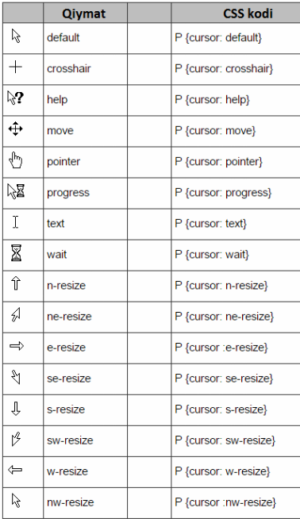
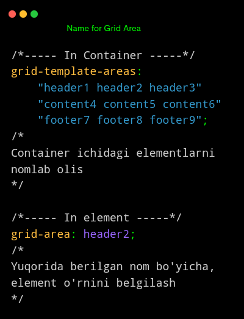

CSS
Text style, Matn uchun stillar
Matn beazagi
Matn yozilish turi
Hover
button:hover{
cursor: pointer;
background-color: red;
}Cursor, Hover kõrinishlar
Background, orqa fon bilan ishlash
Orqa fon rangi
Orqa fonga rasm qõyish
Orqa fonni elementga moslash
Orqa fon takrorlanishi
Orqa fonni qotirib qõyish
Orqa fonni aynan qayerini olish
HTML
Elementni biror tomonga surish
Õlchamga moslash padding, margin, borderlar bilan
Element õzgarish davomiyligi vaqti
HTML,
Positions, Turlar
Faqat obyektga nisbatan
Child, Obyekt target
1-element uchun stil
2-element uchun stil
Hartoq element uchun stil
Harjuft element uchun stil
Õlchamlar
Css media query
Har-xil qurilmalar uchun stil yozish
@media (max-width: 767px) { }
Telefon uchun
@media (min-width: 768px) and (max-width: 1023px) { }
Planshet uchun
@media (min-width: 1024px) { }
Kompyuter uchun
Telefon uchun
Planshet uchun
Kompyuter uchun
Css flex-box
Gorizantal joylashish tartibi
Elementlar Vertikal joylashuvi
Bu holatda elementga height(balandlik) berilmagan bõlishi kerak
Border õlchamiga moslash
Element boshqa elementlarga qaraganda necha marta tezroq qisqarishini belgilash
Element boshqa elementlarga qaraganda necha marta tezroq õsishini belgilash
Boshlang'ich õlcham
grow shrink bases
Element joylashuv õrni
CSS Grid

Grid bu asosan jadvalga õhshash elementlarga talluqli hisoblanadi
Ustunlar(3 ta) va ular õlchami (px)
Qatorlar(2 ta) va ular õlchami (px)
Eniga elementlar oralig'i
Bõyiga elementlar oralig'i
Eniga, ustunlarning ma'lum(2/4) qismini õzlashtirish
Bõyiga, ustunlarning ma'lum(2/4) qismini õzlashtirish
Elementlarni konteyner biror tomoniga surish(ENIGA)
Elementlarni konteyner biror tomoniga surish(BÕYIGA) QIYMATLARI:
Grid Area,Nom orqali joylashtirish
REPEAT
Element yaratish(5 ta 10pxli element yaratish)
Har bir elementga alohida qiymat berib, yaratish
Minimum va Maksimum qiymat berish
Qancha element sig'dirish kerakligini avtomatik aniqlash(Bõsh joylarni tõldirib)
Qancha element sig'dirish kerakligini avtomatik aniqlash(Bõsh joylarni tõldirmasdan)
ANIMATSIYA
Animatsiya:
Animatsiya yaratish, boshlanish(from) tugash(to) xolati
animation-name: aName;
Yuqoridagi animatsiyani elementga birlashtirish
animation-duration: 3s;
Animatsiya davomiylik vaqti(sekund)
animation-iteration-count: 10;
A. qaytarilishi(necha marta)
infinite - cheksiz
animation-delay: 4s;
Boshlanishdan oldingi pauza vaqti
animation-direction: alternate;
A. bajarilish tartibi
reverse
Teskari t.
alternate
Odatiy t.
alternate-reverse
Har-bir xolat, teskari tartibi
animation-timing-function: linear;
A. vaqt funksiyasi
linear
Bir-tekis
ease-in
sekindan-tezga
ease-out
tezdan-sekinga
animation-fill-mode: backwards;
A.dan sõng, element holati
backwards
Boshlang'ich
forwards
Sõnggi
animation-play-state:running;
Document yuklanganda A.
running
Yurgazilgan
paused
Tõxtatilgan
animation: name 3s 1s 10 linear forwards ;
Barchasi bittada
@keyframes aName{
from{font-size: 16px;}
to{font-size: 26px;}
}
Animatsiya yaratish, boshlanish(from) tugash(to) xolati
Yuqoridagi animatsiyani elementga birlashtirish
Animatsiya davomiylik vaqti(sekund)
A. qaytarilishi(necha marta)
infinite - cheksiz
Boshlanishdan oldingi pauza vaqti
A. bajarilish tartibi
Har-bir xolat, teskari tartibi
A.dan sõng, element holati
- Animatsiya nomi
- Davomiyligi
- Delay
- Takrorlanish
- Vaqt funksiyasi
- Sõnggi holati